前段时间我写了一篇 Hermes + Obsidian + LLM Wiki 的知识沉淀玩法，没想到后台一下来了很多消息，问我还有没有别的组合能玩。
有。
而且这套我自己用了一阵子之后，感觉比上次那套更顺手：Hermes + NotebookLM。
先看一眼整体玩法，一张图就够了：
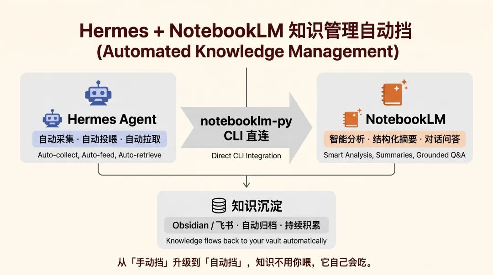
这篇我就讲三件事：它到底怎么用，适合什么场景，怎么搭起来。
NotebookLM 是什么？先过一遍
先给还没怎么用过 NotebookLM 的朋友补个 30 秒版本。老用户可以直接跳下一节。
NotebookLM 是 Google 出的 AI 知识工具。它跟 ChatGPT、Claude 这类通用助手有个很直接的区别：它主要围着你给它的资料工作。
你扔进去 10 篇论文，它给出的回答就从这 10 篇里找。每条回答还会带来源，这点很省心。
NotebookLM 的核心能力我也整理成了一张图：
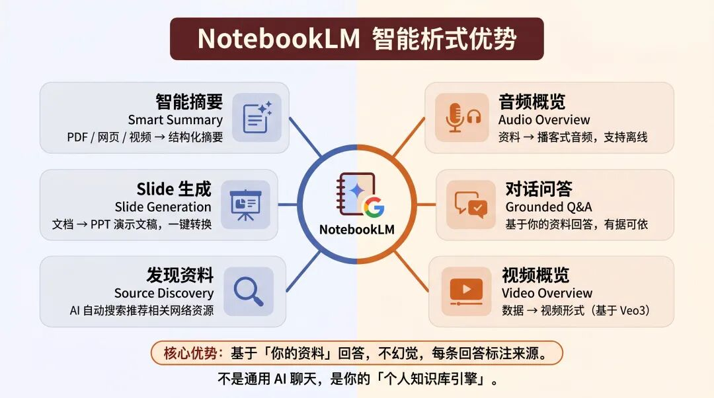
看到这一步，很多人的第一反应通常都是：这已经挺好了，为什么还要接 Hermes？
卡点其实很简单。NotebookLM 本身能打，但很多活还是得你自己来：手动上传文档，手动组织提问，手动把结果复制出去再整理。偶尔用一两次当然还行，真要把它放进日常工作流，这套手动流程很快就让人懒得开。
我之前就是这样。新鲜劲过去之后，打开频率直线下降。
后面把 Hermes 接上去，感觉一下就对了。
Hermes + NotebookLM：知识管理切到自动挡
先把这个组合拆开说。
Hermes 负责采集、投喂和执行动作，NotebookLM 负责分析、问答和生成结果。结果出来以后，还能继续回流到你的知识库里。
你平时最烦的那几个环节——喂什么、怎么喂、输出往哪放——Hermes 都能接过去。
这张图会更直观：
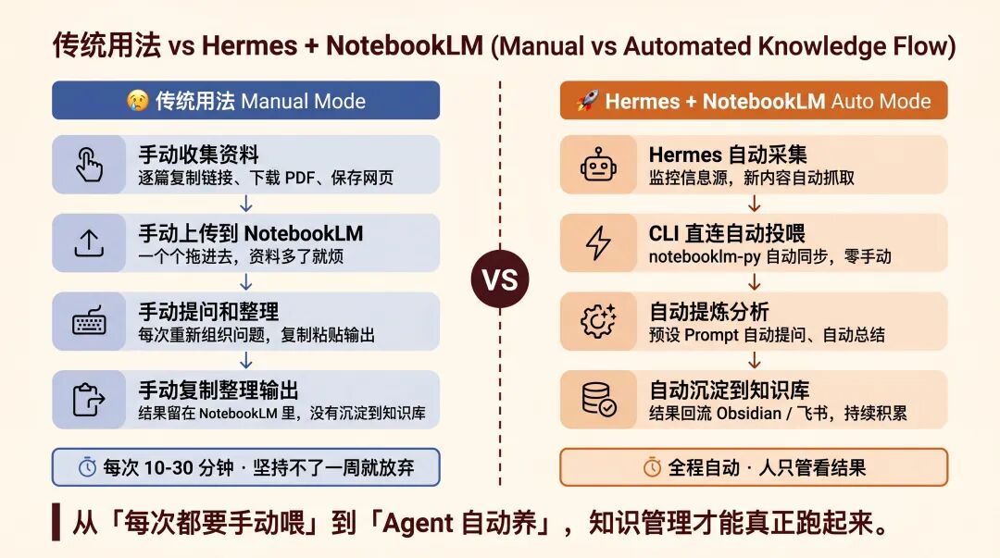
手动挡和自动挡，差别就在这。
我自己现在最在意的也不是“快了多少”，而是这套东西能不能长期跑。手动流程的问题常常不是慢，是它很难坚持。你每天都得重复做一遍的事，基本坚持不了太久。自动化一接上，整个库会自己慢慢长起来。
这时候知识沉淀才开始变得真实。
先看基础版：用 Hermes 直接操控 NotebookLM
先不聊复杂场景，先看最基础的一层：把 NotebookLM 当成 Hermes 的一个外接知识库来用。
接上之后，你在 Hermes 里直接用自然语言就能操作 NotebookLM，浏览器都不用开。
几个常用动作，直接看。
1、列出所有笔记本
跟 Hermes 说一句“列出 NotebookLM 所有的笔记”，它会直接调 CLI，把你的 Notebook 全列出来。名字、ID、创建时间，一次给全。
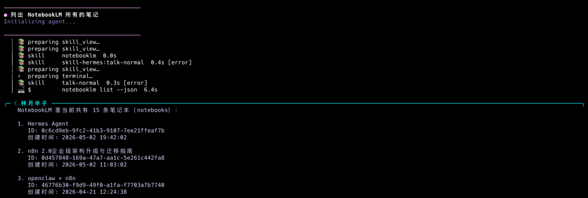
2、往笔记本里加资料
Hermes 这两天出了新版本，里面有个 Curator 的概念。我在 YouTube 上刷到一个介绍视频，就直接跟 Hermes 说：
把这个视频加到 Hermes Agent 的笔记里：Hermes Agent Just Got 10x BETTER (Curator Explained)
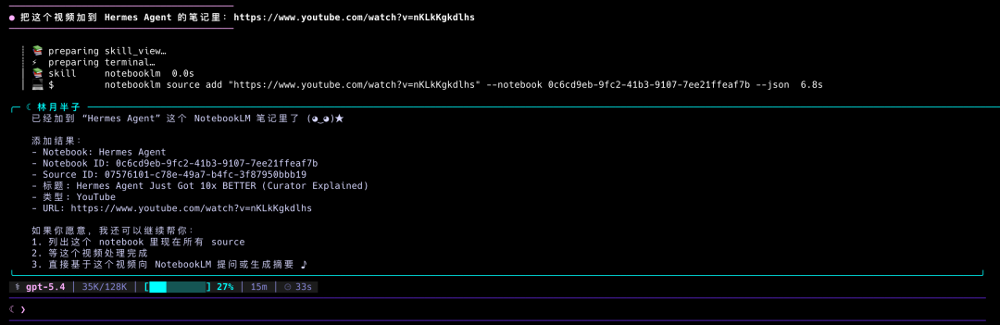
它不光把视频加进去了，还会顺手接着问你下一步要不要列资料、要不要等处理完之后直接提问、要不要生成摘要。
这点我挺喜欢。它像个会往前走一步的 Agent，不只是把命令原样执行完。
3、直接提问
链接加进去之后，我对 Curator 这个概念有点好奇，就直接问 Hermes：
根据 Hermes Agent 笔记里的资料，Curator 是什么？它解决了什么问题？
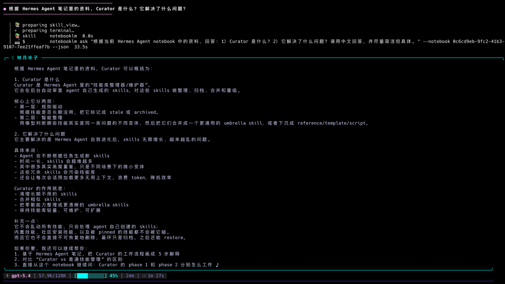
Hermes 会自己去 NotebookLM 里查，然后基于刚加进去的资料给你答案。
从“加资料”到“问问题”，整个过程都在终端里完成。
4、生成输出
问完之后，我想把 Curator 的整体脉络理清楚，就继续说：
根据 Hermes Agent 笔记里的资料，用 notebooklm 帮我生成一个 Curator 的思维导图，并保存到桌面
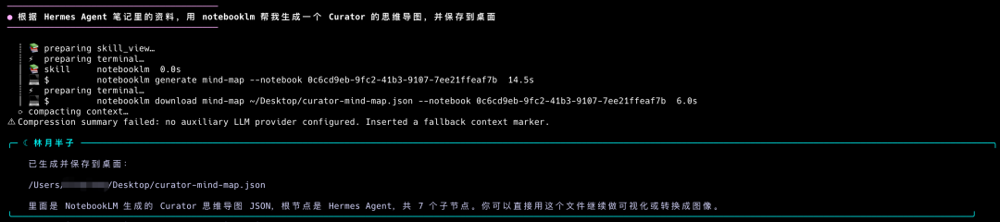
Hermes 先调用 notebooklm generate mind-map 生成思维导图，再自动下载到桌面。整个过程很快，不到 20 秒。最后拿到的是一个结构化 JSON 文件，根节点是 Hermes Agent，下面有 7 个子节点，后面拿去可视化或者转图片都行。
还有个小地方也挺舒服：你打开 NotebookLM 网页版会发现，Hermes 在终端里做的事，这边都会同步显示。加视频、提问、生成脑图，都在。
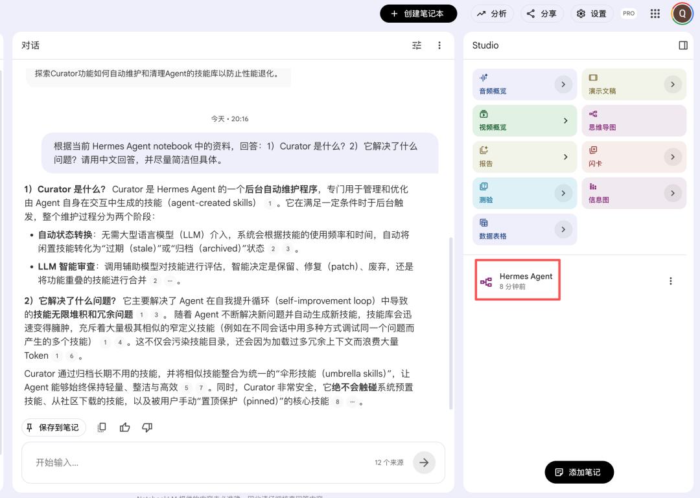
所以我的用法基本是这样：高频操作放在终端里跑，需要回看或继续追问的时候，再去网页版。两边是通的。
这些动作单独看都不复杂，连起来就很像一个完整的知识库操控台。以前那些开浏览器、登录、找 Notebook、手动上传的步骤，现在基本都压缩成一句话。
这个还只是基础版。
除了前面这种“学一个新概念”的用法，这套组合我后来还拿来做日常信息消化、技术选型调研、课程素材准备。场景不止一个。
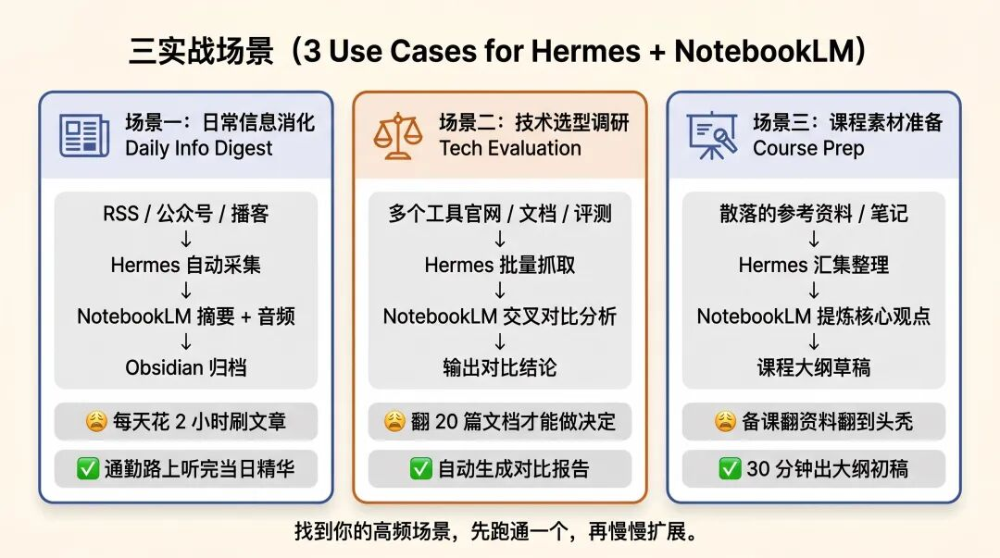
背后的逻辑倒是一直没变：Hermes 负责采集和执行，NotebookLM 负责理解和输出。
为什么我觉得这套值得长期留着
前面讲的是怎么用。真正让我留下来的，是后面的两个感受。
第一：省 Token，也省脑子里的上下文负担
Hermes 用久了之后你会很明显地感觉到一件事：资料一多，每次对话都得先想这次该带哪些背景进去。
几篇文档、项目说明、前面的讨论记录，一股脑塞进 prompt 里，token 很容易就上去。更麻烦的是，你每次都要自己判断取舍：带少了它不知道背景，带多了上下文又容易爆。
接上 NotebookLM 之后，这个判断成本会轻很多。
大堆资料放到 NotebookLM 里，让它去管检索和理解；Hermes 就专心干当前的活，只有在需要的时候再去拿那一小段关键信息。
这个分工我很喜欢。资料还是那些资料，但不用每次都搬一遍。
我做 PPT 的时候感受最明显。
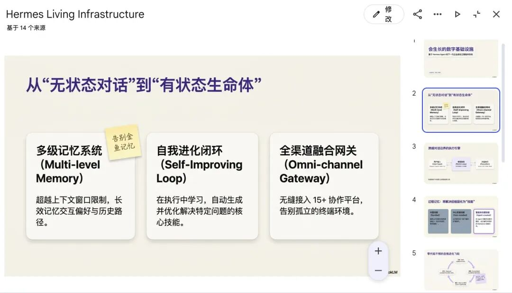
以前做一个技术分享，常常得把一堆参考材料塞进 prompt 里，几万 token 下去，效果还不一定稳。现在这些资料都在 NotebookLM 里，我只需要跟 Hermes 说要做什么，它自己去找、去整理、去生成。
比如这是我当时给 Hermes 的一段生成指令，风格写得比较细，你完全可以按自己的口味改：
将 Hermes Agent 的笔记生成幻灯片，并保存到桌面。
风格：现代高级商务科技风，类似顶级咨询公司的演示文稿。
配色：浅暖白/米白底色，深靛紫（#5136A2）作为标题和重点强调色，辅助色用淡紫和灰蓝。文字用深炭灰。不要用饱和度过高的颜色，不要霓虹或赛博朋克效果。
排版：每页一个大标题靠左或左上对齐，字体加粗突出。正文精简，每页核心观点不超过3-5条。大量留白，呼吸感强，不要堆满内容。
结构偏好：优先使用卡片式布局（圆角卡片+轻阴影），流程用虚线箭头连接的步骤卡，数据用大数字KPI卡片展示。避免传统项目符号列表。
整体感觉：像一份高端SaaS产品的投资人演示，既有科技专业感又不冰冷。偶尔可以用便利贴风格的小批注增加温度。不要卡通、不要3D渲染、不要模板感太重的通用设计。一个负责记忆，一个负责执行。这样分开之后，效率确实会舒服很多。
第二：知识会自己往前滚
这点是我后来越用越上头的地方。
Hermes 和 NotebookLM 一旦接通，知识不会再只是“存着”。它会开始流动起来。你采集、整理、提问、生成、回写，下一次再拿来继续用，前一次留下来的东西就成了新起点。
流程大概是这样：
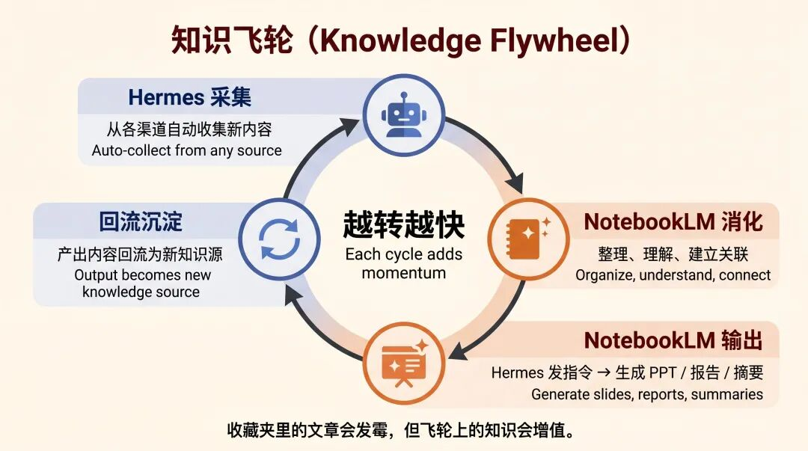
我自己把它叫飞轮，也就是从这里开始的。
而且入口不止一个。上一篇写的 Obsidian + LLM Wiki，那套积累下来的内容，也可以随时同步进 NotebookLM 里继续做深度研究。操作很直接，跟 Hermes 说一句：
新建一个"XXXX"的 NotebookLM 笔记本，把 Obsidian 里 YYYY 相关的内容导入进去。
基本就可以了。后面你再拿 NotebookLM 去做交叉分析、生成摘要、问答，体验会比在 Obsidian 里纯检索往前多走一步。
也不只是 Obsidian。你平时从别的地方转给 Hermes 的内容——微信里看到的文章、群里别人甩过来的链接、Twitter 上的一串讨论——后面想深挖的时候，都可以继续塞进 NotebookLM。
这也是我现在很依赖这套的原因：平时顺手存下来的东西，后面真有机会再被用起来。
用久一点之后，NotebookLM 里会慢慢积累出一批你自己筛过、消化过的资料。到你再写新东西的时候，起点已经不再是空白页了。
我在意的是这个。
这套流程怎么搭
看完前面的场景，如果你已经有点想试，这一段就够用了。
搭建本身其实没有想象中那么重。还有个很舒服的点：这件事本身也可以交给 Hermes 来做。
先看一眼整条链路是怎么跑的：
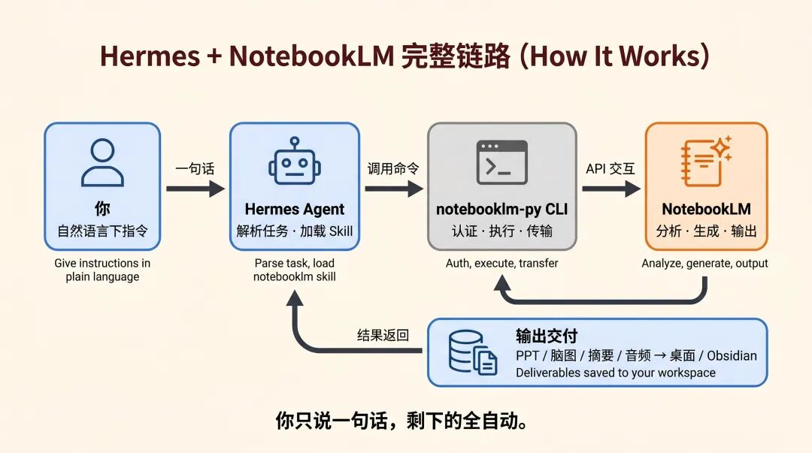
很多人一听“打通两个系统”，脑子里先冒出来的是配接口、写代码、折腾环境。放到 Hermes 这里，思路会简单很多。你直接把它当成一个任务丢给它就行：去读安装说明，按步骤装好。
这种感觉挺对味的。Agent 不只是帮你跑业务流程，连准备工作也能顺手接过去。
Step 1：安装 notebooklm-py，让 Hermes 能直接操作 NotebookLM
这一步是关键。这里用的是一个叫 notebooklm-py 的开源 CLI 工具。
它可以让你直接通过命令行操作 NotebookLM：创建笔记本、添加资料、提问、拿摘要，这些都能走命令。
安装这一步你也可以直接交给 Hermes。跟它说一句：
阅读 Github项目 https://github.com/win4r/notebooklm-py 的安装说明，并且安装。
然后 Hermes 就会自己去读文档、自己安装。装完之后会把结果反馈给你。
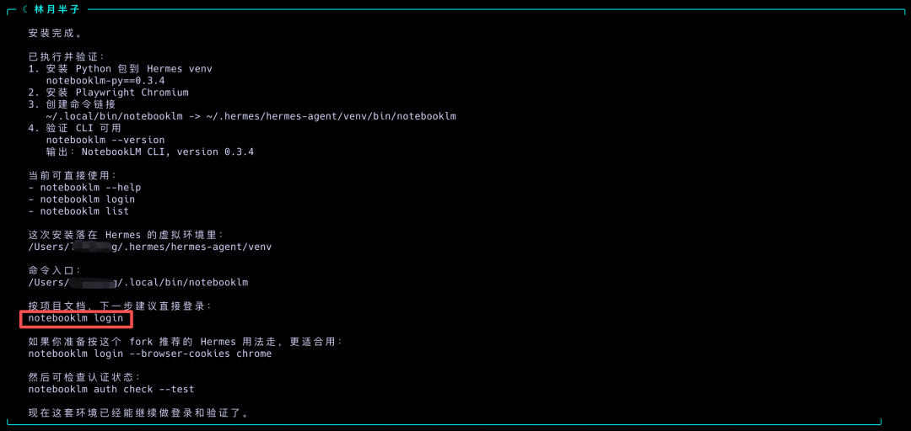
再跑一下 notebooklm --version。如果看到 NotebookLM CLI, version 0.3.4，基本就通了。
这一步真的很省事。你几乎不用自己手敲安装流程。
Step 2：登录认证，让 Hermes 拿到 NotebookLM 的钥匙
工具装好之后，还差登录这一步。
开一个新的终端，执行 notebooklm login。这个命令会自动弹出 Chrome 登录页，你在里面登自己的 Google 账号就行。登录完成之后按一下回车，认证信息就会保存下来。
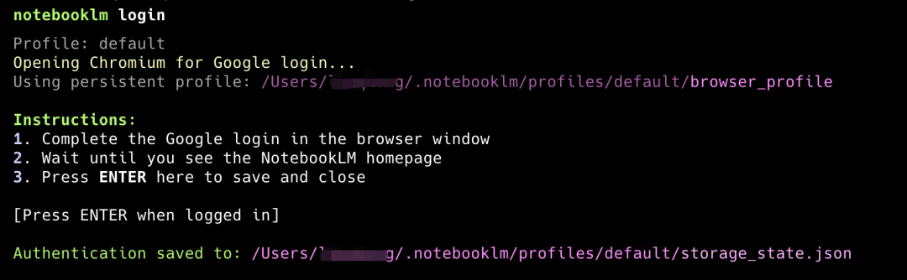
Step 3：验证打通，让 Hermes 列出你的笔记本
到这一步，跑一下 notebooklm list。只要能顺利列出你的笔记本，链路就通了。
前面那些基础操作，到这里就都能用了。
写在最后
从 Obsidian + LLM Wiki 到这次的 NotebookLM，我越来越确定一件事：Hermes 适合放在中间，专门负责把采集、整理、投喂、执行这些动作串起来。
这样一来，你跟信息之间的关系会轻松很多。很多重复动作都有人接手，你就把精力留给判断、取舍和真正需要自己动脑子的部分。
如果你本来就在折腾个人知识管理，这套很值得自己跑一遍。链路一旦通了，后面很多玩法都会自己冒出来。
这套我还会继续往下用。后面有新的玩法，再写。
加入社群
我平时主要折腾 n8n 自动化、OpenClaw 和各种 AI Agent 实战，群里经常有人分享踩坑经验、工作流配置和新工具的第一手体验。
遇到问题群里问，看完文章群里聊。点击下方加入，一起搞。
如果觉得不错，随手点个「赞」和「在看」，转发给需要的朋友吧～
第一时间收到推送，记得给我个星标⭐